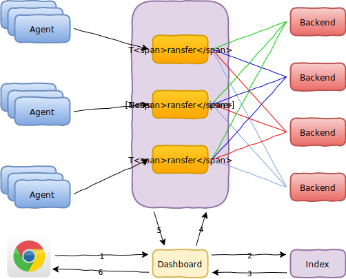
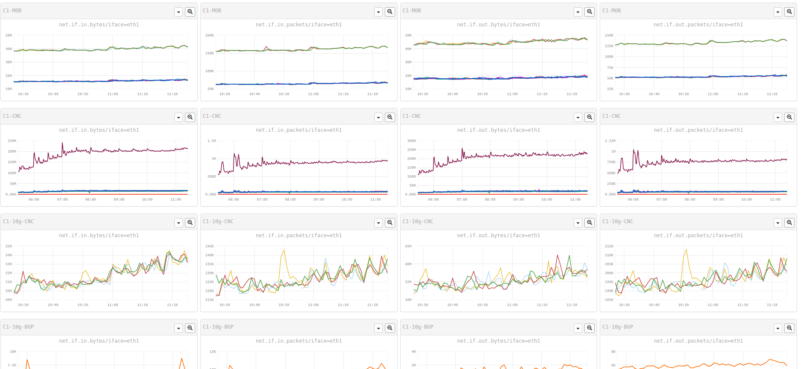

name: inverse layout: true class: center, middle, inverse --- # falcon 系统设计 [xiaomi] .footnote[sa-dev [yubo@xiaomi.com](mailto:yubo@xiaomi.com)] --- ## 为什么设计falcon监控系统？ --- layout: false .left-column[ ## Why ] .right-column[ - 负载 - 规则配置 - 数据清理 ] --- .left-column[ ## Why ## Design ] .right-column[ - 水平可扩展 - 负载 - 数据易于自动维护 - 数据清理 - 无状态(CREATE+UPDATE+DEL=PUT) - 负载 - 规则配置 - 数据的生产/消费 解耦和 - 负载 - 规则配置 ] --- template: inverse ## 实现 --- .left-column[ ## Why ## Design ## Implement ### - collect ] .right-column[ 每个采样数据都带有完整的描述信息 ```xml { metric: load.1min, endpoint: open-falcon-host, tags: srv=falcon,idc=aws-sgp,group=az1 value: 1.5, timestamp: 1489549579, counterType: GAUGE, step: 60 } ``` ] --- .left-column[ ## Why ## Design ## Implement ### - collect ### - transfer ] .right-column[ falcon的通讯方式，较好的解决了之前的性能瓶颈，实现了水平扩展,小米目前的监控系统，每秒传输的数据采样点在850,000左右  #### placement(PUT,GET) - 使用一致性hash实时计算出采样点的位置信息 #### index(LIST) - 通过tag，metric查询采样数据时，需要使用索引，查询出数据的hash值 ] --- .left-column[ ## Why ## Design ## Implement ### - collect ### - transfer ### - storage ] .right-column[ 以小米目前的负载，每天会产生547G的原始数据，会给存储和检索带来较大压力 单位 | 秒 | 天 | 月 | 年 -----|--------|--------|--------|--- 183b | 148.34M| 12.22T | 366.70T| 4.36P 8b | 6.48M | 547.17G| 16.03T | 195.04T - 默认使用rrdtool作为存储 * 实时归档,查询时的数据不需要整理 * 数据文件大小固定，不需要维护 - 支持tsdb ] --- .left-column[ ## Why ## Design ## Implement ### - collect ### - transfer ### - storage ### - query ] .right-column[ http://perfcounter.pt.xiaomi.com/screen/17012?cols=4  - web browser -> dashboard -> query -> graph - 20 picture - 8 line / picture - 280 point / line - 160 request - 44800 point - 耗时0.7~1.2s ] --- .left-column[ ## Why ## Design ## Implement ### - collect ### - transfer ### - storage ### - query ### - alarm ] .right-column[ - 监控机器数量: 2万多台机器 - 监控指标数量: Endpoint(4万+)，Counter(14153万+) - 监控指标Step分布: 30s(83万+)，60s(5300万+)，300s(8500万+) - 报警策略数量: 80w - 全局策略数量: 4.6k ] --- .left-column[ ## Why ## Design ## Implement ## Flaw ] .right-column[ - 动作是响应式的，需要事件触发 * 没有数据时（no data） - 由于使用了hash分片，数据无法直接聚合 * cluster - 历史数据的查询 - rrd 整理后存储，没有保存原始数据 - tsdb, hbase ] --- .left-column[ ## Why ## Design ## Implement ## Flaw ## Todo ] .right-column[ - 中心化配置 - 数据的冗余和恢复 - 更丰富的联合查询&判断 - 模块&插件支持 ] --- .left-column[ ## Why ## Design ## Implement ## Flaw ## Todo ## References ] .right-column[ - [http://open-falcon.org](http://open-falcon.org) - [http://github.com/open-falcon](http://github.com/open-falcon) - [http://oss.oetiker.ch/rrdtool](http://oss.oetiker.ch/rrdtool) - [https://en.wikipedia.org/wiki/Consistent_hashing](https://en.wikipedia.org/wiki/Consistent_hashing) ] --- .left-column[ ## Why ## Design ## Implement ## Flaw ## Todo ## References ## Connect ] .right-column[ - 陈帅 [chenshuai1@xiaomi.com](mailto:chenshuai1@xiaomi.com) - 杨翔宇 [yangxiangyu1@xiaomi.com](mailto:yangxiangyu1@xiaomi.com) - 喻波 [yubo@xiaomi.com](mailto:yubo@xiaomi.com) - 张宝清 [zhangbaoqing@xiaomi.com](mailto:zhangbaoqing@xiaomi.com) - 张少志 [zhangshaozhi@xiaomi.com](mailto:zhangshaozhi@xiaomi.com) - 赵文文 [zhaowenwen@xiaomi.com](mailto:zhaowenwen@xiaomi.com) ] --- template: inverse ## Thank You .footnote[sa-dev [yubo@xiaomi.com](mailto:yubo@xiaomi.com)]